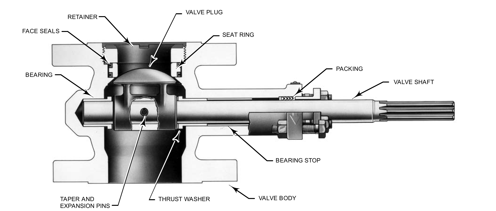

Eccentric Plug Valve — A Rotary/Globe Hybrid

- 1Retainer — holds the face seals in place atop the seat assembly
- 2Valve Plug — cams into the seat ring on closure for globe-style tight shutoff
- 3Seat Ring — the massive, rigid sealing surface the plug cams against
- 4Face Seals — seal the plug-to-seat interface
- 5Bearing — supports the shaft's rotation inside the body
- 6Taper & Expansion Pins — locate and secure the plug to the shaft
- 7Thrust Washer — takes up axial load along the shaft
- 8Valve Body — the pressure-boundary casting, rigid enough to carry the seat design
- 9Packing — seals the shaft where it exits the body
- 10Valve Shaft — carries rotary actuation into the plug
- 11Bearing Stop — limits shaft travel at the bearing
After Fisher Control Valve Sourcebook — Power & Severe Service, 4th ed. (D101449X012), Fig. 1-10 (drawing W4170-3/IL) — delivered via the Oil & Gas Sourcebook's identical Fig. 1-8 crop, a confirmed cross-sourcebook duplicate; own printed labels retained (Style Guide Sec 6.3). Component Index: pss-cmp-v500-eccentric-plug-cutaway.